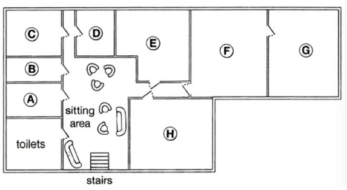

Cambridge IELTS 11
Time: approx. 30 minutes
Instructions
Digital recreation of Cambridge IELTS Listening Test 4.
Type answers in the gaps. Click options for multiple choice.
Print this page for paper-like practice.
Questions 1–7: Complete the table. Questions 8–10: Matching A–C.
Questions 1 – 7
Complete the table below. Write ONE WORD AND/OR A NUMBER for each answer.
| Event | Cost | Venue | Notes |
|---|---|---|---|
Jazz band |
Tickets available for £15 |
The1school |
Carolyn Hart (plays the2) |
Duck races |
£1 per duck |
Start behind the3 |
Ducks can be bought in the5 |
Flower show |
Free |
Bythwaite6 |
Prize: tickets for4— presented by a well-known7 |
Questions 11–16: Matching A–G. Questions 17–20: Label the plan A–H.

Questions 21–26: Choose TWO letters A–E. Questions 27–30: Choose A, B or C.
Click to select (max 2)
Click to select (max 2)
Click to select (max 2)
Complete the notes below. Write ONE WORD ONLY for each answer.
IELTS Listening Test 4 • Cambridge IELTS 11 • Practice recreation (content from official PDF)